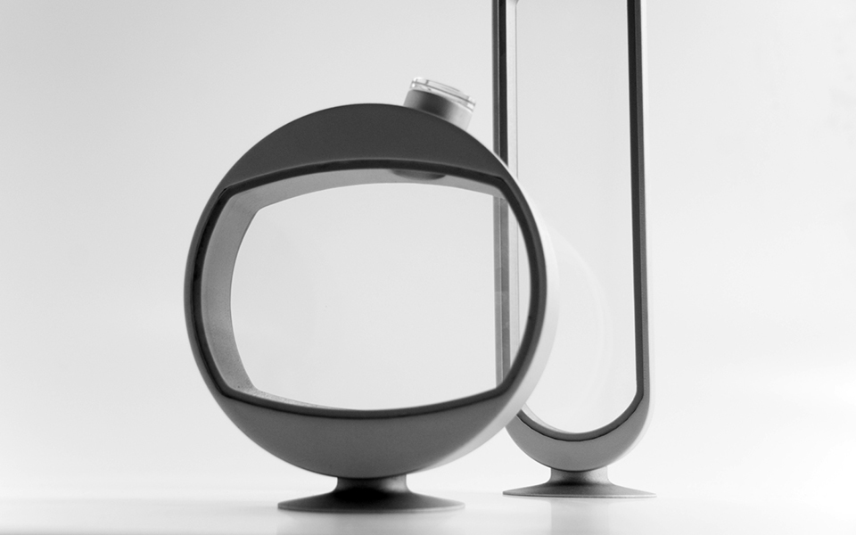
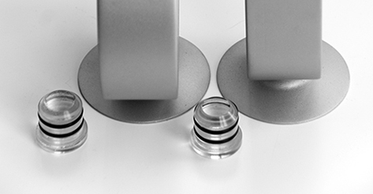
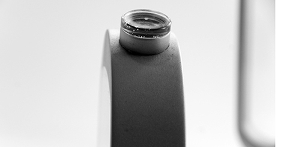

| HOME | EDUCATION | EMPLOIS | FLACON | 5263 FABRE | HUGO | CONTACT |
|
FLACON * Prix d'excellence du CQRDA 2013 pour un projet faisant appel aux qualites de l'aluminium |
|
|  | |
|
Contenant a spiritueux de 750 et 500ml. Le plus elance des deux contenants
est concu pour accueillir des liqueurs transparentes telles la vodka ou
la tequila, alors que le plus dodus est fait pour accueillir des spiritueux
ambres tels le scotch ou le whisky.
Rappelle les carafes de la belle epoque remaniees au gout du jour. Il s'agit en fait, d'un contenant en verre serti dans un cadre d'aluminium. Son pied se visse a la base et confere a l'objet une sorte de prestance, comme un piedestal ou un trophee. Son goulot place en angle lui donne un air pretentieux; comme s'il avait le nez en l'air. Il facilite aussi la prehension de l'objet puisqu'il offre une direction. Celui-ci est assemble par pression. |
Le contenant d'aluminium brosse est usine. Les arretes exterieures sont coupees en biseau (chanfreins)
pour augmenter la reflexion de la lumiere, mais aussi pour adoucir les jonctions.
Les parois interieures du contenant sont coupees a angle pour, eux aussi, reflechir davantage la
lumiere et pour permettre d'observer le parcours de la derniere goutte.
Son bouchon en verre donne de l'eclat sur le dessus de l'objet; etincelle, tout en laissant percevoir la couleur du liquide qui se trouve a l'interieur. |
|  |  |